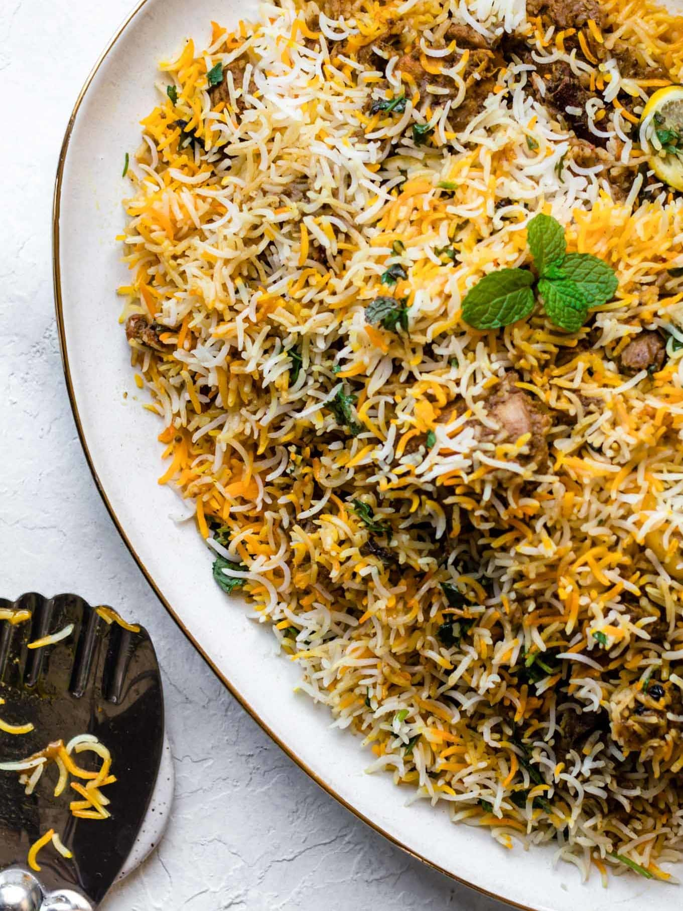

Pakistani Chicken Biryani

Ingredients
- 1/2 kg chicken
- 1/2 kg rice
- 1/2 cup oil
- 1/2 cup yogurt
- 1/2 cup fried onion
- 1/2 cup tomato
- 1/2 cup mint
- 1/2 cup coriander
- 1/2 cup green chilli
- 1/2 cup ginger garlic paste
- 1/2 cup lemon juice
- 1/2 cup salt
- 1/2 cup red chilli powder
- 1/2 cup turmeric powder
- 1/2 cup cumin powder
- 1/2 cup coriander powder
- 1/2 cup garam masala powder
- 1/2 cup biryani masala powder
- 1/2 cup food colour
How to Prepare Pakistani Chicken Biryani!
- Marinate chicken with yogurt, fried onion, tomato, mint, coriander, green chilli, ginger garlic paste, lemon juice, salt, red chilli powder, turmeric powder, cumin powder, coriander powder, garam masala powder, biryani masala powder and food colour.
- Boil rice with salt, cumin seeds, bay leaf, black pepper, cloves, cinnamon stick, black cardamom and green cardamom.
- Layer rice and chicken in a pot and cook on low flame for 30 minutes.